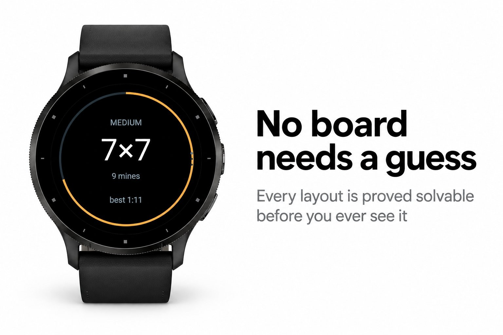
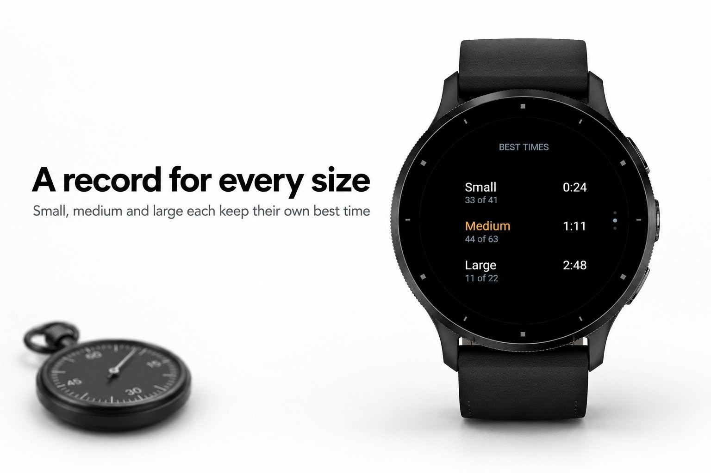
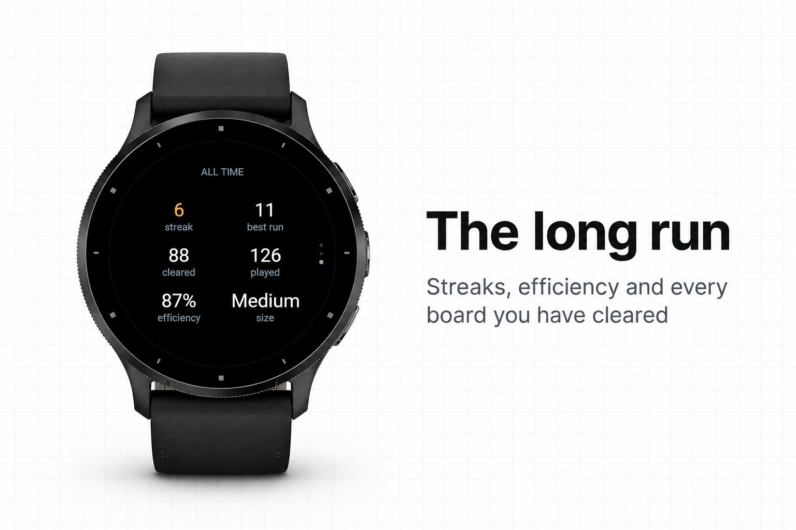
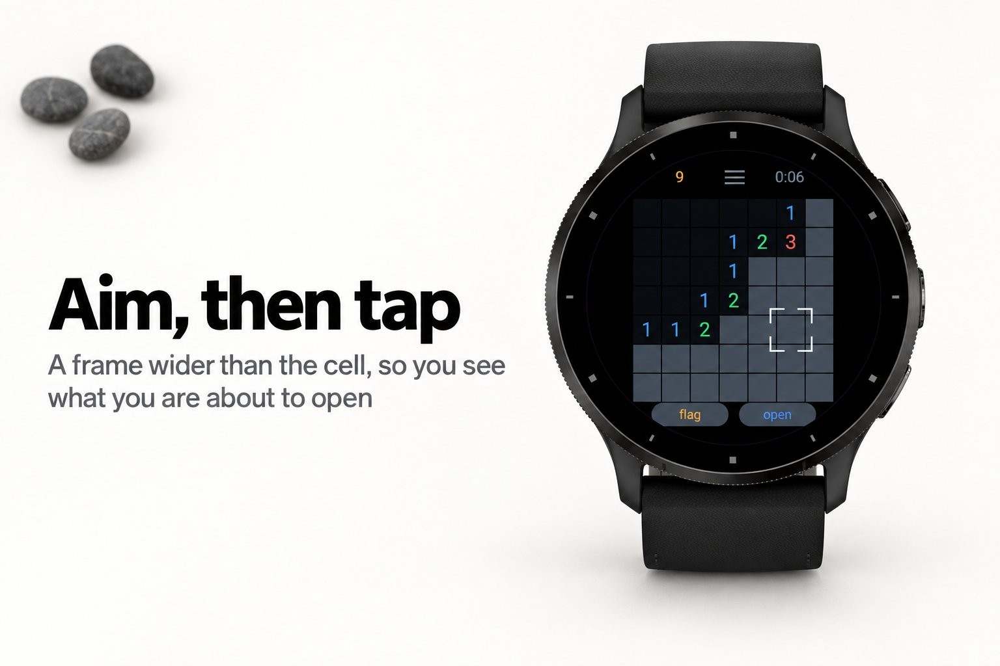
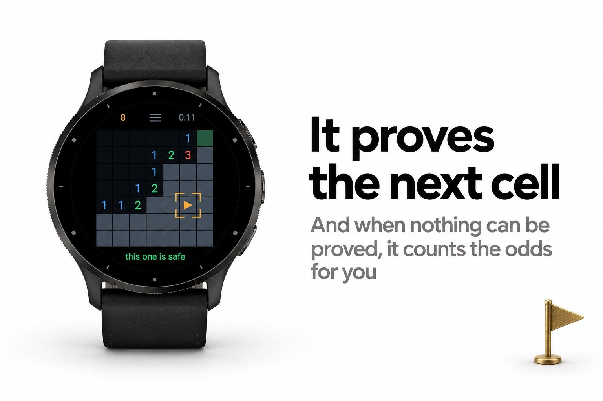

Games & puzzles · Device app
Minesweeper you can always solve without guessing.





Every minesweeper ends the same way. You clear nine tenths of the board, you reach a
corner where two cells are equally likely, you pick one, and the board takes it away
from you. That is not a puzzle, that is a coin.
Sweepr does not lay a board until it has proved you can finish it. Behind the first
cell you open, a solver works the whole field out using only the reasoning a person
uses: a number with as many covered neighbours as it has mines left flags them all, a
number with none left opens them all, and where two numbers overlap, the difference
between them settles cells neither could settle alone. If the solver ever has to
guess, that layout is thrown away and another is laid. What you get is a board that
rewards thinking and nothing else.
stays visible around your fingertip; the second tap opens it, holding it plants a flag
legal arrangement of the remaining mines and tells you the safest cell and the odds
perfect player would need
Nothing but the watch. No phone, no signal, no account.